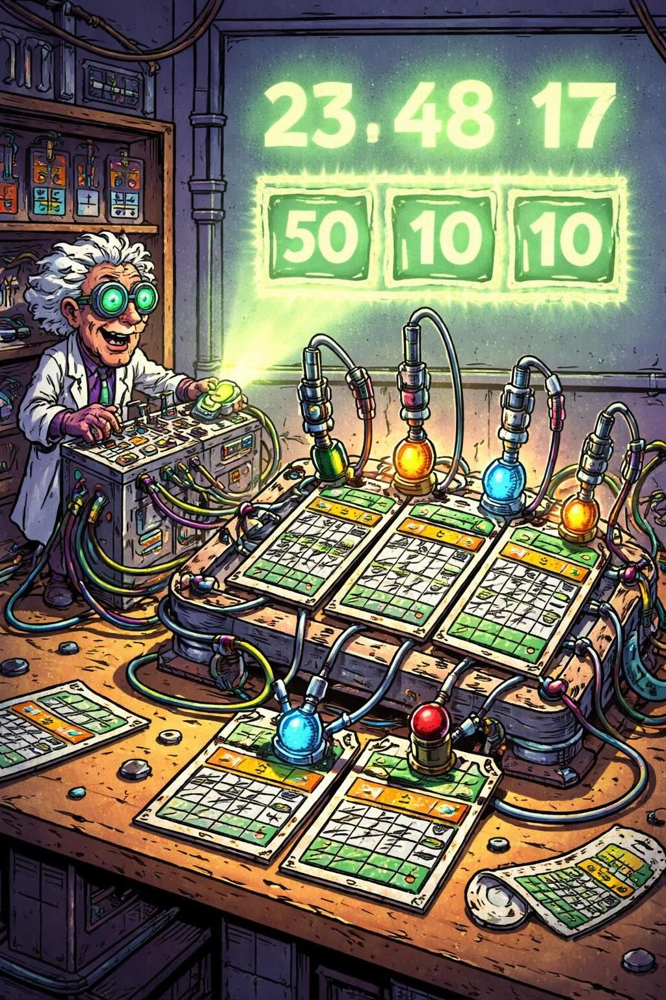

TORONTO, Ont. — WHEN NORMAN Morris arrived at his staid Toronto office on a Monday morning in mid-June, he wanted answers. The day before he'd been shocked to learn in the Toronto Sun that symbols under the latex covering of some instant-game lottery tickets sold by the Ontario Lottery Corp. had been exposed by an X-ray technician. The silver-haired Morris, OLC president since 1981, had been unaware of the problem.
Morris, 57, a chartered accountant and Conservative appointee, had dealt with busted tickets before. But usually it was the testing lab used by the OLC that discovered the flaws. Morris quickly consulted OLC staff and ordered that the tickets be tested. The OLC normally uses an Indiana-based lab but had to move fast. A local lab confirmed the results the next day, and Morris told a hastily called news conference that 12 million tickets, printed by Canadian Security Printers Ltd. of Mississauga, Ont., were being withdrawn. It cost the OLC $8 million in profits.
The incident was also costly to Canadian Security Printers - a subsidiary of Canadian Bank Note Co. Ltd. - which has virtually ceased printing tickets. But CSP is simply the latest victim in the cutthroat North American lottery-service industry in which $360 million in annual contracts are up for grabs. The lotteries are run by government corporations, but private-sector printers set the rules. They invented the instant-game tickets - they even create and install most on-line games - and they continue to define the business. Their twofold goal: developing a more secure ticket at a lower cost, and busting a competitor's tickets. For it's when tickets are busted that lucrative printing contracts come open.
Lottery corporations promote total faith in their products; yet the instant-game ticket is continually busted by advancing technology. In this war between the wizards of printing, the unknowing victims are the players of insecure games. Adam Hawkins, OLC's executive vice-president, says: "Canadian Security Printers is not the only company that has had products removed from the marketplace."
The OLC's recent embarrassment was unusual in the insular lottery business. But insiders say that lotteries have suffered more than 100 such security breaches in North America since 1973 and still suffer several more each year. Public scandals erupted routinely over busted tickets until 1981; then the printing companies agreed to expose the faulty tickets they found only to the Connecticut-based North American Association of State and Provincial Lotteries. Lottery officials believe secrecy preserves the technical secrets locked up in instant-game tickets. Blaine Lewis, who runs the association, says that lottery executives meet at semi-annual conferences but, in the interests of security, do not even take notes. Their goal: to maintain public confidence in the rapid-growth industry. Last year alone, lotteries hit sales of $13.8 billion (US) in the U.S. and $3.7 billion in Canada. As Lewis says, "This has become a very, very big business."
Back in 1973, there was no such prosperity. The few lotteries operating, primarily in the U.S. Northeast, conducted simple, repetitive draws with only a few large prizes available to an increasingly bored public. No small prizes were awarded to hook players, and ticket sales dwindled. Lottery officials looked for a dramatic turnaround and wondered if the answer might be an instant-prize ticket like those used by supermarkets to push products.
By mid-1973, New Hampshire found a printer and received 10 million tickets, which it sent to banks for distribution. The world’s first instant-win game was set for launch; but at the last minute another printer, Scientific Games Inc., exposed the numbers inside the sealed paper tickets with a medical microscope. The tickets were immediately withdrawn, which bankrupted the printer.
That exploit made the cofounders of Scientific Games legends in lottery land. In 1973, Daniel Bower was a 40-year-old designer of supermarket games while John Koza was a 32-year-old expert in mathematical probability. Each brought to the company the diversity needed to mix science and gaming. For Bower and Koza busting other tickets became a game itself. Their methods were often simple yet ingenious. Bower recalls that, after New Hampshire's near-disaster, Massachusetts lottery officials considered using a peel off foil-covered ticket instead of Scientific Games scratch off latex-covered tickets. "We broke it quickly," he says happily. "There was a good number of ways. The one that really blew their minds was that you put it down on the table and run an ordinary pencil eraser over the foil, which would make the images below appear on the foil. And then you simply take your finger and run it over the foil and make it disappear.” Massachusetts officials were convinced; Scientific Games launched the first instant-game lottery on May 29, 1974. “The big danger with the other tickets," says Bower, "was that the retailer could go through and take out all the winners and sell only losers."
It was a tale to be repeated many times, making Scientific Games the largest lottery-supply company and enriching its co-founders. The Massachusetts game was a startling success; the lottery officials had struck it lucky too. The 25 million tickets sold within days to long lineups in Boston. "They called within hours," Bower remembers, "and said, 'Print more tickets! Print more tickets!' We, and the entire lottery industry, knew we were on to something very big."
Other printers jumped on the bandwagon. But "the inability to make secure instant-game tickets quickly sunk most companies. There are three basic ingredients to a ticket: the game symbols (which determine winners), the validation number (which must match a lottery code) and the book number (which is visible for accounting purposes). Until the late 1970s, all tickets were produced on sheet-fed presses. The possibilities for fraud were enormous. All three numbers were printed before the game symbol was covered. Bower says he knows of at least one instance of printing-plant workers who kept ticket lists of book numbers that corresponded to winning numbers. When unsold tickets were returned, the winners were picked out. "If those tickets are coming back and you are sitting there with a list," says Bower, "you can simply go through them and give the Winners to relatives to have them redeemed."
It is now much harder to execute such a scam. Virtually every printer uses a system developed by Stanford University and Scientific Games -- now a subsidiary of Bally Manufacturing Corp. -- called dual security. The playing symbols are now covered with latex before being shifted and shuffled at another press, where they receive book numbers. Tickets are also layered with identifiable security features built right inside the ticket.
Still, Bower says, his company's laboratory continues to find flaws in the tickets of competitors sold in the 27 American states and five Canadian provinces with lotteries. "We still find several flaws a year," says Bower. "We keep a running total of what kinds of tickets are being produced and what their weaknesses are." That the OLC wasn't alone in its ticket trials is cold comfort to Norman Morris: two days after he recalled the 12 million flawed tickets, Ontario's Liberal government fired him.